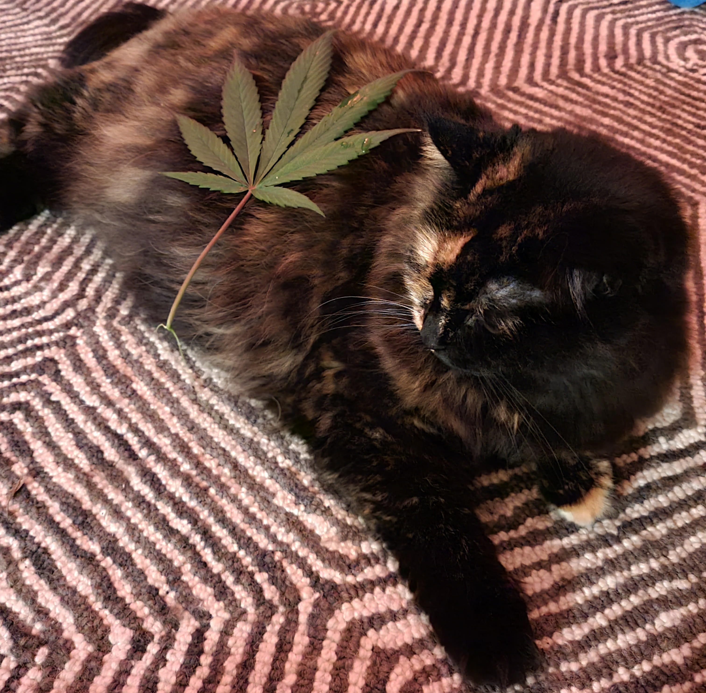

About Randy
Randy is a absolute unit. A big fan of naps and food she doesn't let a meal time pass her by, just like her name-sake.
Reason behind her hunger
Randy's Characteristics
- She's got a big belly
- She's got a healthy addiction to catnip
- She's ready to rumble
Randy's Favourite Foods
Although an unending hunger, Randy is quite picky. As she veers towards more of the fish variety of food, these make most of her top selections. Click on the links below to read more about them.